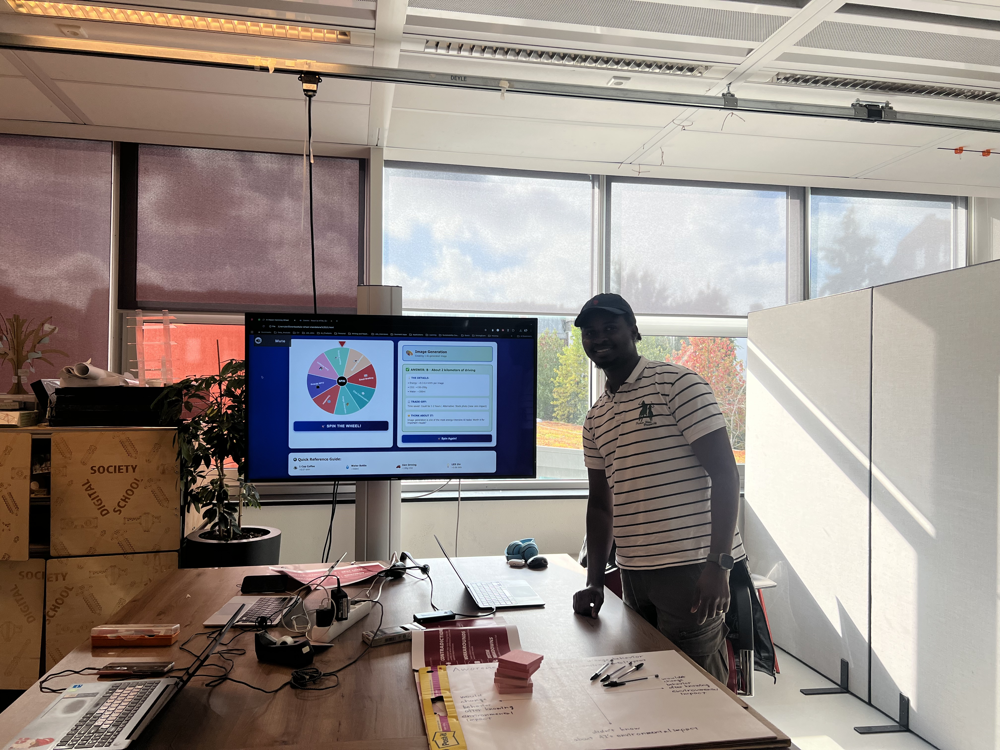
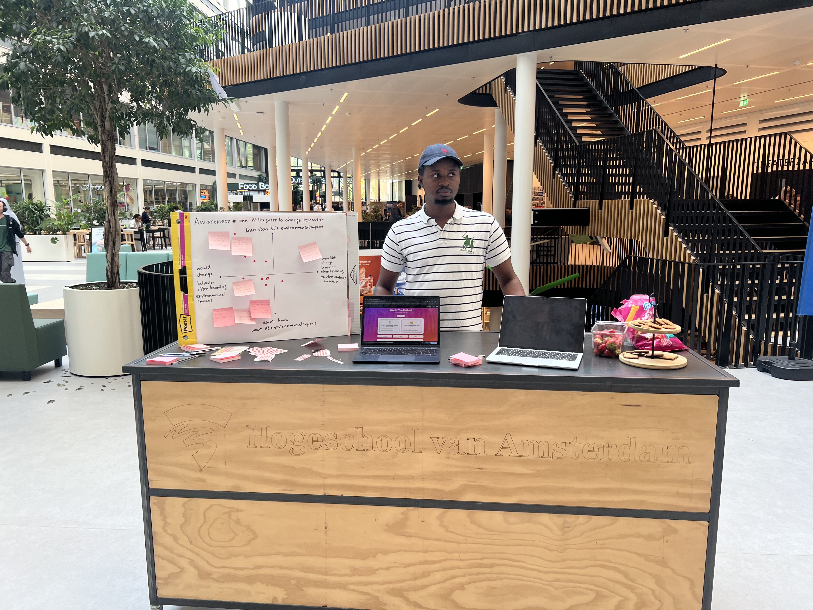

Sustainable AI Framework
Balancing the benefits of generative AI with its environmental cost — a decision framework and prototype for the Dutch Ministry of Finance.
AI GovernanceSustainabilitySDG 12 & 13Prototyping
The challenge
Generative AI is becoming government infrastructure — but every prompt has a footprint. How does a finance ministry adopt AI responsibly without greenwashing or grinding innovation to a halt?
My approach
- Researching the environmental impacts of generative AI systems end-to-end
- Building a sustainability assessment framework for concrete AI use cases
- Prototyping decision-support tools with real users at the Ministry
- Aligning everything with UN SDG 12 and SDG 13
Where it stands
- Working decision-support prototype — try the EcoPrompt Coach demo below
- Framework tested in public research sessions in Amsterdam
